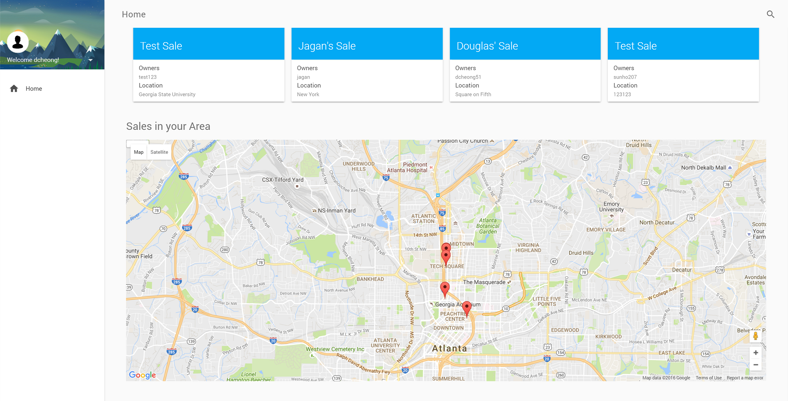

In the summer of 2016, I worked in a team of 5 to develop a web app that could be used for garage sales. We developed the application primarily using the Java Play framework which allowed the team (who was most familiar with Java) to easily write backend logic. The Play framework uses Scala templates on the front end. During the semester I worked with both the backend Java and frontend Scala HTML templates, along with a bit of Javascript every now and then. For databasing we hosted a PostgreSQL table on Heroku, allowing for easy deployment at the later stages.
Implementing the Google Places API
One part of this project I'm proud of, and that highlights some of the features of Scala templating, is the implementation of a sales map in our application. For the unfamiliar, using the Google Places API involves making asynchronous queries that return via a callback function. However, performing multiple queries raises the problem of the responses returning out of order, messing up the order in which one presents data. This was a bit of a headscratcher - how could I force an asynchronous call to essentially 'freeze' until a response was returned? I concluded that this was bad design, and instead the answer that I like best came from the ability of Scala templating to simply hardcode variables. By separating the callback functions to use separate, unique variables, I managed to avoid the problem of asynchronous return entirely
Overall, I learned a massive amount from this project. Building all of the components in MVC was essentially an extended version of my other full stack projects. Though I knew Java, HTML/CSS, JavaScript, etc. before I started this project, making everything work together really solidified my understanding of the bottom up workings of web apps. Cool stuff!